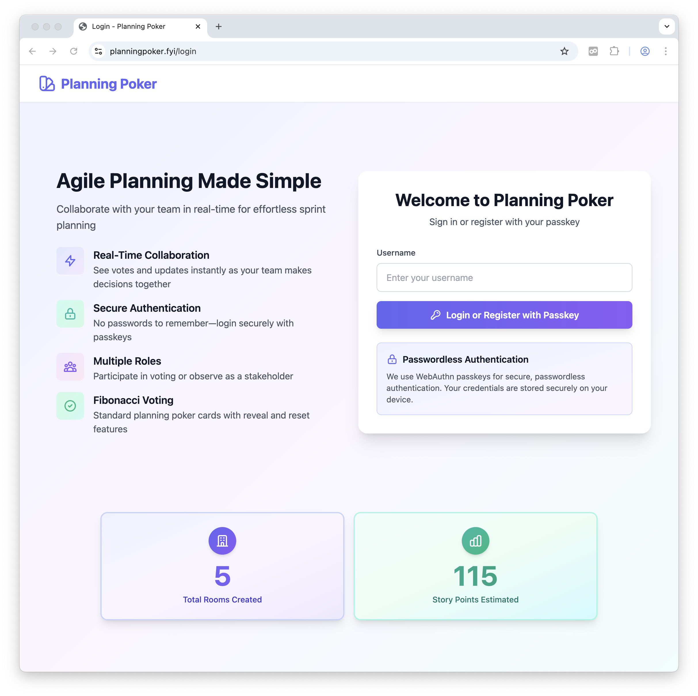
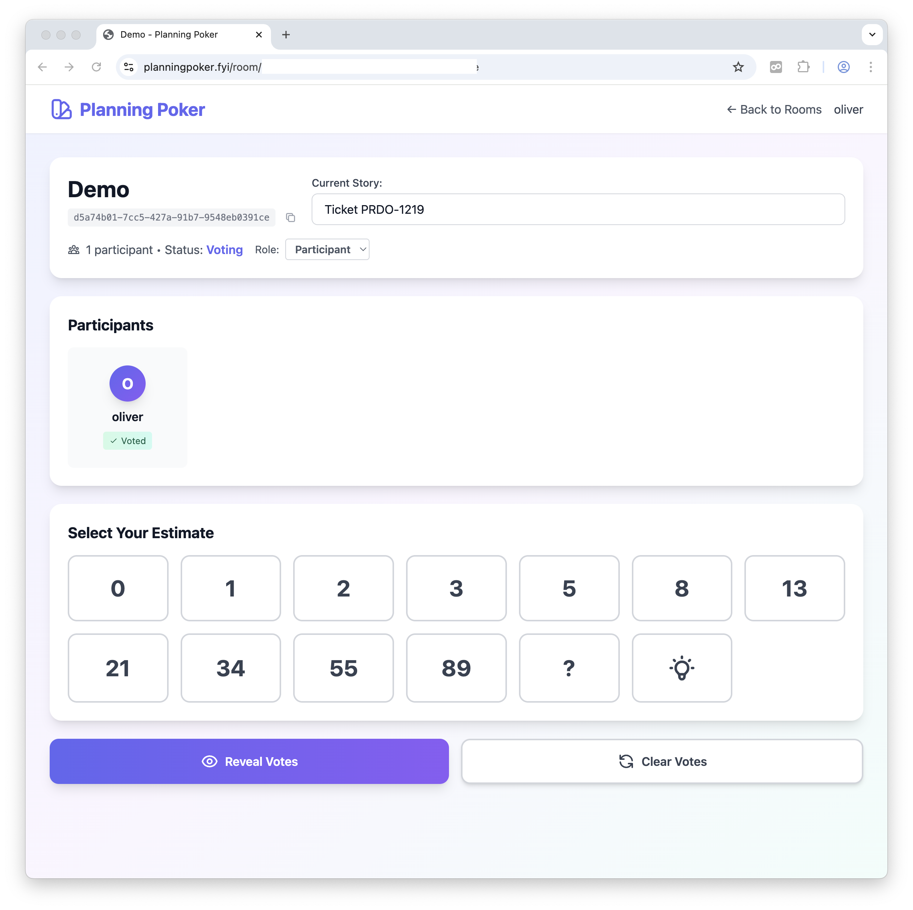
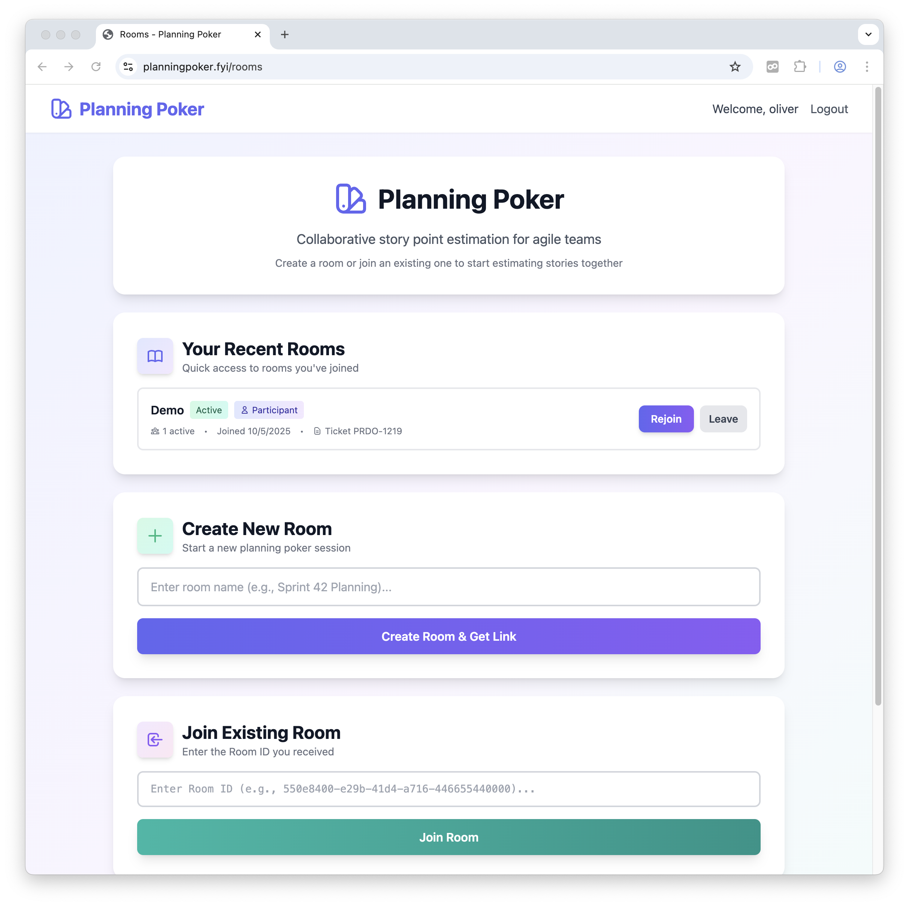

AI coding test turned to product
TLDR;
- Write want you want
- Help cursor plan it
- Execute one step after another in a new agent window
- Commit to git each step.
- Win.
AI Coding
Everybody does AI coding. Well, not everybody. I went to the Berlin CTO Roundtable some time ago and we discussed the learnings and adoption of AI coding.
Two things stuck to my mind.
The usual adoption curve is ChatGPT -> Github Coilot -> Cursor. Some of the participants stated that only after they introduced Cursor, the adoption grew. With ChatGPT and Copilot it was more of a ‘meh’.
Especially Senior developers, I was told, are not seeing the benefit of AI assisted coding. They know their way around, and are of course faster. They not often giving it a chance to be more than an extension in their IDE, to try out different ways of coding.
Nevertheless, at my employeer we also think introduced AI tools like Github CoPilot and Cursor. To get some street cred I needed a project to try that out. I’m wearing two hats at the moment, Engineering Manager and Product Manager of our brand new product. A bit of dance, but that’s a different story.
So as a Product Manager I try to get some rough estimates during refinement to understand the constraints and complexity we have. For that we do classic story point estimation. This is useful for a discussion in the team to check if they understand more or less the same in a specific story.
We jumped from tool to tool to support us for that estimation. All were not that good and having that in mind, I found my pet project to get started with cursor. An agile planning poker app which does not suck.
Yes, it is a green field project. Yes, it is fairly small.
So after a few Youtube videos of Lee Robinson (VP Education at Cursor) I started with a simple readme.
Here is are the most essiential things I learned.
Readme and plan
I started with a simple readme.
# Planning Poker
This is an webapp which allows a team to do an agile plannig poker.
Member should be able to login via username and passkey.
Everyone can create a 'room' where other can join if they know the room name.
Inside this room, a regular agile plannig poker can take place,
typical fibunacci numbers. All member are seen in a list and can make a
estimate which is not shown yet. After everyone estimated or the reavel button
is pushed, all estimates are shown. User can be participant (like developers)
or observer (like PO).A clear button brings back the inital state and everyone
can estimate a new story.
## Features
- Modern, minimalistic design
- Warm colors, modern icons
## Tech Stack
- **Backend**: Python, FastAPI, SQLAlchemy, SQLite
- **Frontend**: Jinja2 templates, Tailwind CSS v4
- **Authentication**: Passkeys with usernames (WebAuthn)
I wanted to judge the code later, so I start with Python which I still code once in a while.
I asked cursor:
Look at the readme and help me plan this app. Write it to plan.md.
Start Coding
So it started to hash out the different phases in a 6 step (with substeps) plan. Look at it make adjustments where needed.
Start with implementing Step 1
And it went off and did it. Now just work down the plan and adjust it where needed.
Two main takeaways for starters
One step after another was done. What helps here is
- Commit after every successful step to git
- Each new task should be done in a new agent window. The context clogs up and gets confused after a while, even though it tried to summarize after the context reached 100%
New features
Of course new features came to my mind during development. I simply asked to do it and then continued after that with the plan.
Some things did not work out quite well and I could easily revert to the latest git head.
Cursorrules
Cursor can read files with context to know how to act. I asked it to write some cursor rules in the new format (seperate files) about on how to git commit, to test and how the tech stack of the project is. It knows now in every new agent window the rules and how to behave. I also asked it to write the code in a way a junior developer could understand and maintain the code.
Take away
Coding was very different. I did some cursor coding in beginning of 2025 but back then this was pure vibe coding. Now I sat back thought about requierements, gave cursor hints on architecture, helped troubleshoot problems with code and databases. It was a real interaction. It was like a technical PO / Architect talking to a Junior Developer who can, if asked correctly, also implement Passkeys and think about Security. It felt really good.
My next step will be a project where I worked on for about a year and see if I can extend and maintain it to get a feeling how Cursor performs in legacy projects.
Result
Overall I’m really impressed. I started at 6:00 in morning and at 10:00 am I had https://planningpoker.fyi up and running and that included buying the domain and setup the deployment.
Features
- Login with Passkeys
- Creating rooms
- Joining as participants and oberservers
- Text describing the task (or just showing the ticket number, synced accross all particpants with websockets)
- Voting (Websockets)
- Revaling (Websockets)
- Joining past rooms
  
Hyperpersonal Software
All of that got me thinking about how minimal costs are nowadays to create a solution for just my problem. The costs are near zero. I think a lot of tools will be created just like that to solve a niche problem. Software might not be even refactored but thrown away and rewritten.